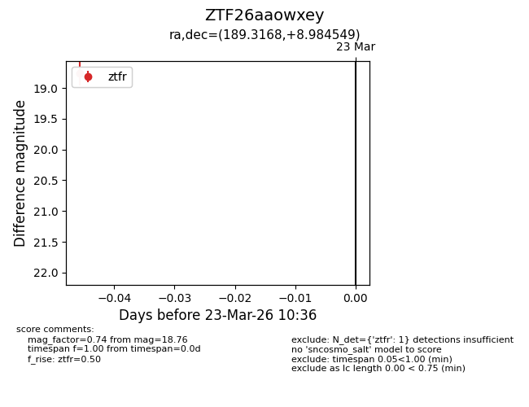
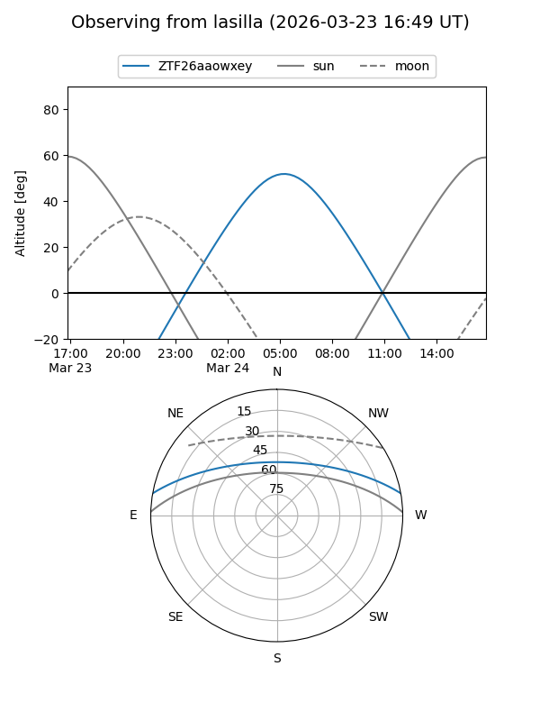
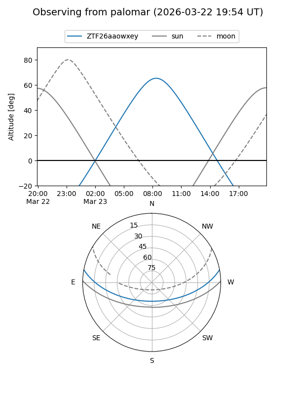

ZTF26aaowxey
Target ZTF26aaowxey at 2026-03-23 10:38
Aliases and brokers:
FINK: link
Lasair: link
ALeRCE: link
alt names
ZTF26aaowxey (ztf,fink_ztf)
Coordinates:
equatorial (ra, dec) = 189.3168,+8.98455
equatorial (HMS+DMS) = 12:37:16.04,+08:59:04.38
galactic (l, b) = (291.8128,+71.54972)
Flags:
Photometry:
last ztfr=18.76
1 ztfr detections
Lightcurve

Visibility


Additional plots